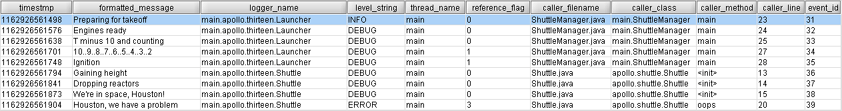

Chapter 4: Appenders
There is so much to tell about the Western country in that day that it is hard to know where to start. One thing sets off a hundred others. The problem is to decide which one to tell first.
—JOHN STEINBECK, East of Eden
What is an Appender?
Logback delegates the task of writing a logging event to
components called appenders. Appenders must implement the ch.qos.logback.core.Appender
interface. The salient methods of this interface are summarized
below:
package ch.qos.logback.core;
import ch.qos.logback.core.spi.ContextAware;
import ch.qos.logback.core.spi.FilterAttachable;
import ch.qos.logback.core.spi.LifeCycle;
public interface Appender<E> extends LifeCycle, ContextAware, FilterAttachable {
public String getName();
void doAppend(E event);
public void setLayout(Layout<E> layout);
public Layout<E> getLayout();
public void setName(String name);
}
Most of the methods in the Appender interface are
made of setter and getter methods. A notable exception is the
doAppend() method taking an object instance of type
E as its only parameter. The actual type of E
would vary depending on the logback module. Within the
logback-classic module E would be of type ILoggingEvent
and within the logback-access module it would be of type AccessEvent.
The doAppend() method is perhaps the most important in
the logback framework. It is responsible for outputting the logging
events in a suitable format to the appropriate output device.
Appenders are named entities. This ensures that they can be
referenced by name, a quality confirmed to be instrumental in
configuration scripts. The Appender interface extends
the FilterAttachable interface. It follows that one or
more filters can be attached to an appender instance. Filters are
discussed in detail in a subsequent chapter.
Appenders are ultimately responsible for outputting logging
events. However, they may delegate the actual formatting of the
event to a Layout object. Each layout is associated
with one and only one appender, referred to as the owning
appender. Some appenders have a built-in or fixed event
format. Consequently, they do not require nor have a layout. For
example, the SocketAppender simply serializes logging
events before transmitting them over the wire.
AppenderBase
The
ch.qos.logback.core.AppenderBase class is an
abstract class implementing the Appender interface. It
provides basic functionality shared by all appenders, such as
methods for getting or setting their name, their activation status,
their layout and their filters. It is the super-class of all
appenders shipped with logback. Although an abstract class,
AppenderBase actually implements the
doAppend() method in the Append interface.
Perhaps the clearest way to discuss AppenderBase class
is by presenting an excerpt of actual source code.
public synchronized void doAppend(E eventObject) {
// prevent re-entry.
if (guard) {
return;
}
try {
guard = true;
if (!this.started) {
if (statusRepeatCount++ < ALLOWED_REPEATS) {
addStatus(new WarnStatus(
"Attempted to append to non started appender [" + name + "].",this));
}
return;
}
if (getFilterChainDecision(eventObject) == FilterReply.DENY) {
return;
}
// ok, we now invoke derived class' implementation of append
this.append(eventObject);
} finally {
guard = false;
}
}
This implementation of the doAppend() method is
synchronized. It follows that logging to the same appender from
different threads is safe. While a thread, say T, is
executing the doAppend() method, subsequent calls by
other threads are queued until T leaves the
doAppend() method, ensuring T's exclusive
access to the appender.
The first thing the doAppend() method does is to
check whether the guard is set to true. If it is, it immediately
exits. If the guard is not set, it is set to true at the next
statement. The guard ensures that the doAppend() method
will not recursively call itself. Just imagine that a component,
called somewhere beyond the append() method, wants to
log something. Its call could be directed to the very same appender
that just called it.
In the following statement we check whether the
started field is true. If it is not,
doAppend() will send a warning message and return. In
other words, once an appender is closed, it is impossible to write
to it. Appender objects implement the
LifeCycle interface, which implies that they implement
start(), stop() and
isStarted() methods. After setting all the properties of
an appender, Joran, logback's configuration framework, calls the
start() method to signal the appender to activate its
properties. Depending on its kind, an appender may fail to start if
certain properties are missing or because of interferences between
various properties. For example, given that file creation depends on
truncation mode, FileAppender cannot act on the value
of its File option until the value of the Append option
is also known with certainty. The explicit activation step ensures
that an appender acts on its properties after their values
become known.
If the appender could not be started or if it has been stopped, a
warning message will be issued through logback's internal status
management system. After several attempts, in order to avoid
flooding the internal status system with copies of the same warning
message, the doAppend() method will stop issuing these
warnings.
The next if statement checks the result of the
attached filters. Depending on the decision resulting from the
filter chain, events can be denied or alternatively accepted. In
the absence of a decision by the filter chain, events are accepted
by default.
The doAppend() method then invokes the derived
classes' implementation of the append() method. This
method does the actual work of appending the event to the
appropriate device.
Finally, the guard is released so as to allow a subsequent
invocation of the doAppend() method.
For the remainder of this manual, we reserve the term "option" or alternatively "property" for any attribute that is inferred dynamically using JavaBeans introspection through setter and getter methods.
Logback-core
Logback-core lays the foundation upon which the other logback modules are built. In general, the components in logback-core require some, albeit minimal, customization. However, in the next few sections, we describe several appenders which are ready for use out of the box.
WriterAppender
WriterAppender
appends events to a java.io.Writer. This class
provides basic services that other appenders build upon. Users do
not usually instantiate WriterAppender objects
directly. Since java.io.Writer type cannot be mapped
to a string, as there is no way to specify the target
Writer object in a configuration script. Simply put,
you cannot configure a WriterAppender from a script.
However, this does not mean that WriterAppender lacks
configurable properties. These properties are described next.
| Property Name | Type | Description |
|---|---|---|
| Encoding | String |
The encoding specifies the method of conversion between
Java's internal 16-bit Unicode representation of characters into
raw 8-bit bytes. This appender will use the local platform's
default encoding unless you say otherwise by specifying an Encoding value. According to the
java.lang package documentation, acceptable values
are dependent on the VM implementation although all
implementations are required to support at least the following
encodings: US-ASCII, ISO-8859-1,
UTF-8, UTF-16BE, UTF-16LE and
UTF-16. As mentioned previously, by default, the Encoding option is null such
that the platform's default encoding is used.
|
| ImmediateFlush | boolean |
If the ImmediateFlush option is
set to true, then each write of a logging event will be followed
by a flush operation on the underlying Writer
object. Conversely, if the option is set to false, each write
will not be followed by a flush. In general, skipping the flush
operation improves logging throughput by roughly 15%. The
downside is that if the application exits abruptly, the
unwritten characters buffered inside the Writer
might be lost. This can be particularly troublesome as those
unwritten characters may contain crucial information needed in
identifying the reasons behind a crash. By default, the ImmediateFlush option is set to true.
|
In general, if you disable immediate flushing, then make sure to flush any output streams when your application exits. Otherwise, log messages will be lost as illustrated by the next example.
Example 4.: Exiting an application without flushing (logback-examples/src/main/java/chapter4/ExitWoes1.java)package chapter4;
import java.io.FileOutputStream;
import java.io.OutputStream;
import java.io.OutputStreamWriter;
import org.slf4j.LoggerFactory;
import ch.qos.logback.classic.Logger;
import ch.qos.logback.classic.LoggerContext;
import ch.qos.logback.classic.spi.ILoggingEvent;
import ch.qos.logback.core.WriterAppender;
import ch.qos.logback.core.layout.EchoLayout;
public class ExitWoes1 {
public static void main(String[] args) throws Exception {
LoggerContext lc = (LoggerContext) LoggerFactory.getILoggerFactory();
lc.reset(); // we want to override the default-config.
WriterAppender<ILoggingEvent> writerAppender = new WriterAppender<ILoggingEvent>();
writerAppender.setContext(lc);
writerAppender.setLayout(new EchoLayout<<ILoggingEvent>());
OutputStream os = new FileOutputStream("exitWoes1.log");
writerAppender.setWriter(new OutputStreamWriter(os));
writerAppender.setImmediateFlush(false);
writerAppender.start();
Logger root = lc.getLogger(org.slf4j.Logger.ROOT_LOGGER_NAME);
root.addAppender(writerAppender);
Logger logger = lc.getLogger(ExitWoes1.class);
logger.debug("Hello world.");
}
}
This example creates a WriterAppender that uses an
OutputStreamWriter wrapping a
FileOutputStream as its underlying Writer
object, with immediate flushing disabled. It then proceeds to log a
single debug message. According to OutputStreamWriter
javadocs, each invocation of a write() method causes
the encoding converter to be invoked on the given character(s). The
resulting bytes are accumulated in a buffer before being written to
the underlying output stream. As astonishing as this may seem,
running ExitWoes1 will not produce any data in the file
exitWoes1.log because the Java VM does not flush output
streams when it exits. Calling the stop()
method of a LoggerContext ensures that all appenders in
the hierarchy are closed and their buffers are flushed. The ExitWoes2 class
uses this statement and outputs a logging request.
The WriterAppender is the super class of three other
appenders, namely ConsoleAppender,
FileAppender which in turn is the super class of
RollingFileAppender. The next figure illustrates the
class diagram for WriterAppender and its subclasses.

ConsoleAppender
The
ConsoleAppender, as the name indicates, appends on
the console, or more precisely on System.out or
System.err, the former being the default
target. ConsoleAppender formats events with a layout
specified by the user. Layouts will be discussed in the next
chapter. Both System.out and System.err are
java.io.PrintStream objects. Consequently, they are
wrapped inside an OutputStreamWriter which buffers I/O
operations but not character conversions.
| Property Name | Type | Description |
|---|---|---|
| Encoding | String |
See WriterAppender properties. |
| ImmediateFlush | boolean |
See WriterAppender properties. |
| Target | String |
One of the String values System.out or System.err. The default target is System.out. |
Here is a sample configuration that uses
ConsoleAppender.
<configuration>
<appender name="STDOUT"
class="ch.qos.logback.core.ConsoleAppender">
<layout class="ch.qos.logback.classic.PatternLayout">
<Pattern>%-4relative [%thread] %-5level %logger{35} - %msg %n</Pattern>
</layout>
</appender>
<root level="debug">
<appender-ref ref="STDOUT" />
</root>
</configuration>
After you have set your current path to the logback-examples directory, you can give the above configuration file a whirl by issuing the following command:
java chapter4.ConfigurationTester src/main/java/chapter4/conf/logback-Console.xml
FileAppender
The FileAppender,
a subclass of WriterAppender, appends log events into
a file. The target file is specified by the File option. If the file already exists, it
is either appended to, or truncated depending on the value of the
Append option.
FileAppender uses a FileOutputStream
which is wrapped by an OutputStreamWriter. Note that
OutputStreamWriter buffers I/O operations but not
character conversions. To optimize character conversions one can
set the BufferedIO option to true which
effectively wraps the OutputStreamWriter with a
BufferedWriter. Properties for FileAppender
are summarized below.
| Property Name | Type | Description |
|---|---|---|
| Append | boolean |
If true, events are appended at the end of an existing file. Otherwise, if Append is false, any existing file is truncated. The Append option is set to true by default. |
| Encoding | String |
See WriterAppender properties. |
| BufferedIO | boolean |
The BufferedIO option is set to
false by default. If set to true, the underlying
OutputStreamWriter is wrapped by a
BufferedWriter object. Setting BufferedIO to true automatically sets the
ImmediateFlush option to false.
The name BufferedIO is slightly
misleading because buffered IO is already supported by
OutputStreamWriter. Setting BufferedIO to true has the effect of
buffering I/O as well as character to raw byte conversions,
saving a few CPU cycles in the process.
|
| BufferSize | int |
Size of BufferedWriter buffer. The default value is 8192. |
| File | String |
The name of the file to write to. If the file does not
exist, it is created. On the MS Windows platform users
frequently forget to escape back slashes. For example, the
value c:\temp\test.log is not likely to be interpreted
properly as '\t' is an escape sequence interpreted as
a single tab character (\u0009). Correct values can
be specified as c:/temp/test.log or alternatively as
c:\\temp\\test.log. The File option has no default value.
If the parent directory of the file does now exist, the FileAppender will automatically create it, including any necessary but nonexistent parent directories. |
| ImmediateFlush | boolean |
See WriterAppender properties. |
| Prudent | boolean |
In prudent mode, Prudent mode implies that Append and ImmediateFlush properties are automatically set to true and the BufferedIO set to false. Prudent mode will approximately triple (x3) the cost of writing a logging event. On an "average" PC writing to a file located on a local hard disk, when prudent mode is off, it takes about 10 microseconds to write a single logging event. When prudent mode is on, it takes approximately 30 microseconds to output a single logging event. This translates to logging throughput of 100'000 events per second when prudent mode is off and approximately 33'000 events per second in prudent mode. Prudent mode can be used in conjunction with
|
By default, FileAppender performs a flushes each
event, ensuring that events are immediately written to disk.
Setting the ImmediateFlush option to
false can drastically reduce I/O activity by letting
OutputStreamWriter buffer bytes before writing them on
disk. For short messages, we have observed 2 or 3 fold increases in
logging throughput, i.e. the number of logs output per unit of
time. For longer messages, the throughput gains are somewhat less
dramatic, and range between 1.4 and 2 fold. Enabling the BufferedIO option, that is buffering
character to byte conversions, increases performance by an
additional 10% to 40% compared to only disk I/O buffering (ImmediateFlush=false). Performance varies
somewhat depending on the host machine as well as JDK version.
Throughput measurements are based on the chapter4.IO
application. Please refer to
logback-examples/src/main/java/chapter4/IO.java for
actual source code.
Below is an example of a configuration file for
FileAppender:
<configuration>
<appender name="FILE" class="ch.qos.logback.core.FileAppender">
<File>testFile.log</File>
<Append>true</Append>
<layout class="ch.qos.logback.classic.PatternLayout">
<Pattern>%-4relative [%thread] %-5level %logger{35} - %msg%n</Pattern>
</layout>
</appender>
<root level="debug">
<appender-ref ref="FILE" />
</root>
</configuration>
After changing the current directory to logback-examples, run this example by launching the following command:
java chapter4.ConfigurationTester src/main/java/chapter4/conf/logback-fileAppender.xml
Uniquely named files (by timestamp)
During the application development phase or in the case of
short-lived applications, e.g. batch applications, it is desriable
to create a new log file at each new application launch. This is
fairly easy to do with the help of the <timestamp>
element. Here's an example.
<configuration>
<!-- Insert the current time formatted as "yyyyMMdd'T'HHmmss" under
the key "bySecond" into the logger context. This value will be
available to all subsequent configuration elements. -->
<timestamp key="bySecond" datePattern="yyyyMMdd'T'HHmmss"/>
<appender name="FILE" class="ch.qos.logback.core.FileAppender">
<!-- use the previously created timestamp to create a uniquely
named log file -->
<File>log-${bySecond}.txt</File>
<layout>
<Pattern>%logger{35} - %msg%n</Pattern>
</layout>
</appender>
<root level="debug">
<appender-ref ref="FILE" />
</root>
</configuration>
The timestamp element takes two attributes key and datePattern. The key attribute is the name of the key under which the timestamp will be available to subsequent configuration elements as a variable. The datePattern attribute denoted the date pattern used to convert the current time (at which the configuration file is parsed) into a string. The date pattern should follow the conventions defined in SimpleDateFormat.
RollingFileAppender
RollingFileAppender
extends FileAppender with the capability to roll log
files. For example, RollingFileAppender can log to a
file named log.txt file and, once a certain condition is
met, change its logging target to another file.
There are two important logback components that interact with
RollingFileAppender. First, a
RollingPolicy instance attached to the
RollingFileAppender is responsible for undertaking the
action for performing a rollover. Second, a
TriggeringPolicy instance attached to a
RollingFileAppender will determine if and exactly when
rollover happens Thus, RollingPolicy is responsible
for the what and TriggeringPolicy is
responsible for the when.
To be of any use, a RollingFileAppender must have
both a RollingPolicy and a
TriggeringPolicy set up. However, if its
RollingPolicy also implements the
TriggeringPolicy interface, then only the former needs
to be set up.
Here are the available properties for RollingFileAppender:
| Property Name | Type | Description |
|---|---|---|
| Append | boolean |
See FileAppender properties. |
| BufferedIO | boolean |
See FileAppender properties. |
| BufferSize | int |
See FileAppender properties. |
| Encoding | String |
See WriterAppender properties. |
| File | String |
See FileAppender properties. |
| ImmediateFlush | boolean |
See WriterAppender properties. |
| RollingPolicy | RollingPolicy |
This option is the component that will dictate
RollingFileAppender's behavior when rollover
occurs. See more information below.
|
| TriggeringPolicy | TriggeringPolicy |
This option is the component that will tell
RollingFileAppender when to activate the rollover
procedure. See more information below.
|
| Prudent | boolean |
|
Rolling policies
RollingPolicy
is responsible for the rollover procedure. It manages file renaming
and in occasion file deleting.
The RollingPolicy interface is presented below:
package ch.qos.logback.core.rolling;
import ch.qos.logback.core.FileAppender;
import ch.qos.logback.core.spi.LifeCycle;
public interface RollingPolicy extends LifeCycle {
public void rollover() throws RolloverFailure;
public String getNewActiveFileName();
public void setParent(FileAppender appender);
}
The rollover method proceeds to the file change,
renaming or deletion. The getNewActiveFileName()
method is called to compute a new file name, with respect to the
configuration elements that were injected into the
RollingPolicy. Lastly, a RollingPolicy
is given a reference to its parent via the setParent
method.
FixedWindowRollingPolicy
When rolling over,
FixedWindowRollingPolicy renames files according
to a fixed window algorithm as described below.
The FileNamePattern option represents the file name pattern for the archived (rolled over) log files. This option is required and must include an integer token %i somewhere within the pattern.
Here are the available properties for
FixedWindowRollingPolicy
| Property Name | Type | Description |
|---|---|---|
| MinIndex | int |
This option represents the lower bound for the window's index. |
| MaxIndex | int |
This option represents the upper bound for the window's index. |
| FileNamePattern | String |
This option represents the pattern that will be followed
by the For example, using MyLogFile%i.log, associated with minimum and maximum values of 1 and 3 will produce archive files named MyLogFile1.log, MyLogFile2.log and MyLogFile3.log. Note that file compression is also specified via the FileNamePattern option. For example, the
file name pattern MyLogFile%i.log.zip will indicate
to the |
Given that the fixed window rolling policy requires as many file renaming operations as the window size, large window sizes are strongly discouraged. The current implementation will automatically reduce the window size to 12, when larger values are specified by the user.
Let us go over a more concrete example of the fixed windows rollover policy. Suppose that the MinIndex is set to 1, MaxIndex set to 3, that FileNamePattern option is set to foo%i.log, and that FileNamePattern option is set to foo.log.
| Number of rollovers | Active output target | Archived log files | Description |
|---|---|---|---|
| 0 | foo.log | - | No rollover has happened yet, logback logs into the initial file. |
| 1 | foo.log | foo1.log | First rollover. foo.log is renamed as foo1.log. A new foo.log file is created and becomes the active output target. |
| 2 | foo.log | foo1.log, foo2.log | Second rollover. foo1.log is renamed as foo2.log. foo.log is renamed as foo1.log. A new foo.log file is created and becomes the active output target. |
| 3 | foo.log | foo1.log, foo2.log, foo3.log | Third rollover. foo2.log is renamed as foo3.log. foo1.log is renamed as foo2.log. foo.log is renamed as foo1.log. A new foo.log file is created and becomes the active output target. |
| 4 | foo.log | foo1.log, foo2.log, foo3.log | In this and subsequent rounds, the rollover begins by deleting foo3.log. Other files are renamed by incrementing their index as shown in previous steps. In this and subsequent rollovers, there will be three archive logs and one active log file. |
The configuration file below gives an example of configuring
RollingFileAppender and
FixedWindowRollingPolicy. Note that the File option is mandatory even if it contains
some of the same information as conveyed with the FileNamePattern option.
RollingFileAppender using a
FixedWindowRollingPolicy (logback-examples/src/main/java/chapter4/conf/logback-RollingFixedWindow.xml)
<configuration>
<appender name="FILE" class="ch.qos.logback.core.rolling.RollingFileAppender">
<File>test.log</File>
<rollingPolicy class="ch.qos.logback.core.rolling.FixedWindowRollingPolicy">
<FileNamePattern>tests.%i.log.zip</FileNamePattern>
<MinIndex>1</MinIndex>
<MaxIndex>3</MaxIndex>
</rollingPolicy>
<triggeringPolicy class="ch.qos.logback.core.rolling.SizeBasedTriggeringPolicy">
<MaxFileSize>5MB</MaxFileSize>
</triggeringPolicy>
<layout class="ch.qos.logback.classic.PatternLayout">
<Pattern>%-4relative [%thread] %-5level %logger{35} - %msg%n</Pattern>
</layout>
</appender>
<root level="debug">
<appender-ref ref="FILE" />
</root>
</configuration>
TimeBasedRollingPolicy
TimeBasedRollingPolicy is possibly the most
popular rolling policy. It defines a rollover policy based on time,
for example by day or by month.
TimeBasedRollingPolicy's admits two properties, the
mandatory FileNamePattern property and
the optional MaxHistory property.
FileNamePattern property defines the
name of the rolled (archived) log files. Its value should consist
of the name of the file, plus a suitably placed %d
conversion specifier. The %d conversion specifier may
contain a date-and-time pattern as specified by the
java.text.SimpleDateFormat class. If the
date-and-time pattern is omitted, then the default pattern
yyyy-MM-dd is assumed. The File property in
RollingFileAppender (the parent of
TimeBasedRollingPolicy) can be either set or omitted.
By setting the File property you can decouple the location of the active log file and the location of the archived log files. The current logs will be always targeted at the file specified by the File property. It follows that the name of the currently active log file will not change over time. However, if you choose to omit the File property, then the active file will be computed anew for each period based on the value of FileNamePattern. The following examples should clarify the point.
| FileNamePattern | Rollover schedule | Example |
|---|---|---|
| /wombat/foo.%d | Daily rollover (at midnight). Due to the omission of the optional time and date pattern for the %d token specifier, the default pattern of yyyy-MM-dd is assumed, which corresponds to daily rollover. |
File property not set: During November 23rd, 2006, logging output will go to the file /wombat/foo.2006-11-23. At midnight and for the rest of the 24th, logging output will be directed to /wombat/foo.2006-11-24. File property set to /wombat/foo.txt: During November 23rd, 2006, logging output will go to the file /wombat/foo.txt. At midnight, foo.txt will be renamed as /wombat/foo.2006-11-23. A new /wombat/foo.txt file will be created and for the rest of November 24th logging output will be directed to foo.txt. |
| /wombat/%d{yyyy/MM}/foo.txt | Rollover at the beginning of each month. |
File property not set: During the month of October 2006, logging output will go to /wombat/2006/10/foo.txt. After midnight of October 31st and for the rest of November, logging output will be directed to /wombat/2006/11/foo.txt. File property set to /wombat/foo.txt: The active log file will always be /wombat/foo.txt. During the month of October 2006, logging output will go to /wombat/foo.txt. At midnight of October 31st, /wombat/foo.txt will be renamed as /wombat/2006/10/foo.txt. A new /wombat/foo.txt file will be created where logging output will go for the rest of November. At midnight of November 30th, /wombat/foo.txt will be renamed as /wombat/2006/11/foo.txt and so on. |
| /wombat/foo.%d{yyyy-ww}.log | Rollover at the first day of each week. Note that the first day of the week depends on the locale. | Similar to previous cases, except that rollover will occur at the beginning of every new week. |
|
/wombat/foo. / %d{yyyy-MM-dd_HH}.log |
Rollover at the top of each hour. | Similar to previous cases, except that rollover will occur at the top of every hour. |
|
/wombat/foo. / %d{yyyy-MM-dd_HH-mm}.log |
Rollover at the beginning of every minute. | Similar to previous cases, except that rollover will occur at the beginning of every minute. |
Any forward or backward slash characters are interpreted as folder (directory) separators. Any required folder will be created as necessary. You can thus easily place your log files in separate folders.
The date-and-time pattern, as found within accolades in %d{} follow java.text.SimpleDateFormat conventions. This any characters within the date-and-time pattern outside the ranges ['a'..'z'] and ['A'..'Z'] will be treated as quoted text. For instance, characters like '.', ' ', '#' and '@' will appear in the resulting time text even when they are not enclosed within single quotes. Nevertheless, we recommend against using the colon ':' character anywhere within the FileNamePattern option. The text before the colon is interpreted as the protocol specification of a URL, which is most probably not what you intend. The forward slash '/' or backward slash '\' characters anywhere within the FileNamePattern property or within the date-and-time pattern will be interpreted as directory separators and any missing directories will be created as necessary.
Just like FixedWindowRollingPolicy,
TimeBasedRollingPolicy supports automatic file
compression. This feature is enabled if the value of the FileNamePattern option ends with .gz
or .zip.
| FileNamePattern | Rollover schedule | Example |
|---|---|---|
| /wombat/foo.%d.gz | Daily rollover (at midnight) with automatic GZIP compression of the archived files. |
File property not set: During November 23rd, 2009, logging output will go to the file /wombat/foo.2009-11-23. However, at midnight that file will be compressed to become /wombat/foo.2009-11-23.gz. For the 24th of November, logging output will be directed to /wombat/folder/foo.2009-11-24 until it's rolled over at the beginning of the next day. File property set to /wombat/foo.txt: During November 23rd, 2009, logging output will go to the file /wombat/foo.txt. At midnight that file will be compressed and renamed as /wombat/foo.2009-11-23.gz. A new /wombat/foo.txt file will be created where logging output will go for the rest of November 24rd. At midnight November 24th, /wombat/foo.txt will be compressed and renamed as /wombat/foo.2009-11-24.gz. and so on. |
The FileNamePattern serves a dual purpose. First, by studying the pattern, logback computes the requested rollover periodicity. Second, it computes each archived file's name. Note that it is possible for two different patterns to specify the same periodicity. The patterns yyyy-MM and yyyy@MM both specify monthly rollover, although the resulting archive files will carry different names.
TimeBasedRollingPolicy assumes the responsibility
for rollover as well as for the triggering of said rollover. Indeed,
TimeBasedTriggeringPolicy implements both
RollingPolicy and TriggeringPolicy
interfaces.
By setting the File property you can decouple the location of the active log file and the location of the archived log files. The logging output will be targeted into the file specified by the File property. It follows that the name of the active log file will not change over time. However, if you choose to omit the File property, then the active file will be computed anew for each period based on the value of FileNamePattern.
The MaxHistory property controls the maximum number of archive files to keep, deleting older files. For example, if you specify monthly rollover, and set MaxHistory to 6, then 6 months worth of archives files will be kept with files older than 6 months deleted. Note as old archived log files are removed, any folders which were created for the purpose of log file archiving will be removed as appropriate.
For various technical reasons, rollovers are not clock-driven but depend on the arrival of logging events. For example, on 8th of March 2002, assuming the FileNamePattern is set to yyyy-MM-dd (daily rollover), the arrival of the first event after midnight will trigger a rollover. If there are no logging events during, say 23 minutes and 47 seconds after midnight, then rollover will actually occur at 00:23'47 AM on March 9th and not at 0:00 AM. Thus, depending on the arrival rate of events, rollovers might be triggered with some latency. However, regardless of the delay, the rollover algorithm is known to be correct, in the sense that all logging events generated during a certain period will be output in the correct file delimiting that period.
Here is a sample configuration for
RollingFileAppender in conjunction with a
TimeBasedRollingPolicy.
RollingFileAppender using a
TimeBasedRollingPolicy (logback-examples/src/main/java/chapter4/conf/logback-RollingTimeBased.xml)
<configuration>
<appender name="FILE" class="ch.qos.logback.core.rolling.RollingFileAppender">
<File>logFile.log</File>
<rollingPolicy class="ch.qos.logback.core.rolling.TimeBasedRollingPolicy">
<FileNamePattern>logFile.%d{yyyy-MM-dd}.log</FileNamePattern>
<!-- keep 30 days' worth of history -->
<MaxHistory>30</MaxHistory>
</rollingPolicy>
<layout class="ch.qos.logback.classic.PatternLayout">
<Pattern>%-4relative [%thread] %-5level %logger{35} - %msg%n</Pattern>
</layout>
</appender>
<root level="debug">
<appender-ref ref="FILE" />
</root>
</configuration>
The next configuration sample illustrates the use of
RollingFileAppender associated with
TimeBasedRollingPolicy in Prudent
mode.
RollingFileAppender using a
TimeBasedRollingPolicy (logback-examples/src/main/java/chapter4/conf/logback-PrudentTimeBasedRolling.xml)
<configuration>
<appender name="FILE" class="ch.qos.logback.core.rolling.RollingFileAppender">
<!-- Support multiple-JVM writing to the same log file -->
<Prudent>true</Prudent>
<rollingPolicy class="ch.qos.logback.core.rolling.TimeBasedRollingPolicy">
<FileNamePattern>logFile.%d{yyyy-MM-dd}.log</FileNamePattern>
<MaxHistory>30</MaxHistory>
</rollingPolicy>
<layout class="ch.qos.logback.classic.PatternLayout">
<Pattern>%-4relative [%thread] %-5level %logger{35} - %msg%n</Pattern>
</layout>
</appender>
<root level="debug">
<appender-ref ref="FILE" />
</root>
</configuration>
Size and time based archiving
You may sometimes wish to archive files essentially by date but
at the same time limit the size of each log file, in particular if
post-processing tools impose size limits on the log files. In
order to address this requirement, logback ships with a
sub-component for TimeBasedRollingPolicy called
SizeAndTimeBasedFNATP, where FNATP stands for File
Naming And Triggering Policy.
SizeAndTimeBasedFNATP
(logback-examples/src/main/java/chapter4/conf/logback-sizeAndTime.xml)
<configuration>
<appender name="ROLLING"
class="ch.qos.logback.core.rolling.RollingFileAppender">
<File>mylog.txt</File>
<rollingPolicy
class="ch.qos.logback.core.rolling.TimeBasedRollingPolicy">
<FileNamePattern>
mylog-%d{yyyy-MM-dd_HH_mm_ss}.%i.txt
</FileNamePattern>
<TimeBasedFileNamingAndTriggeringPolicy
class="ch.qos.logback.core.rolling.SizeAndTimeBasedFNATP">
<MaxFileSize>${sizeThreshold}</MaxFileSize>
</TimeBasedFileNamingAndTriggeringPolicy>
</rollingPolicy>
<layout>
<Pattern>%msg%n</Pattern>
</layout>
</appender>
<root level="debug">
<appender-ref ref="ROLLING" />
</root>
</configuration>
Note the "%i" conversion token in addition to "%d{}". Each time
the current log file reaches MaxFileSize before the
current time period end, it will be archived with an increasing
index, starting at 0.
Size and time based archiving supports cleaning of old archive
files. You just need to specify the number of periods to preserve
within the <MaxHistory> element. When your
application is stopped and restarted, logging will continue at the
correct location, i.e. at the largest index number for the current
period.
Triggering policy interface
TriggeringPolicy
implementations are responsible for instructing the
RollingFileAppender when to rollover.
The TriggeringPolicy interface contains only one
method.
package ch.qos.logback.core.rolling;
import java.io.File;
import ch.qos.logback.core.spi.LifeCycle;
public interface TriggeringPolicy<E> extends LifeCycle {
public boolean isTriggeringEvent(final File activeFile, final <E> event);
}
The isTriggeringEvent() method takes as parameters
the active file, and the logging event currently being
processed. The concrete implementation determines whether the
rollover should occur or not, based on the said parameters.
SizeBasedTriggeringPolicy
SizeBasedTriggeringPolicy looks at size of the
currently active file. If it grows larger than the specified size,
the FileAppender using the
SizeBasedTriggeringPolicy will proceed to the
rollover of the existing active file and create a new one.
This TriggeringPolicy accepts only one parameter,
namely MaxFileSize, with a default
value of 10 MB.
The MaxFileSize option can be specified in bytes, kilobytes, megabytes or gigabytes by suffixing a numeric value with KB, MB and respectively GB. For example, 5000000, 5000KB, 5MB and 2GB are all valid values, with the first three being also equivalent.
Here is a sample configuration with a
RollingFileAppender in conjunction with
SizeBasedTriggeringPolicy.
RollingFileAppender using a
SizeBasedTriggeringPolicy (logback-examples/src/main/java/chapter4/conf/logback-RollingSizeBased.xml)
<configuration>
<appender name="FILE" class="ch.qos.logback.core.rolling.RollingFileAppender">
<File>testFile.log</File>
<rollingPolicy class="ch.qos.logback.core.rolling.FixedWindowRollingPolicy">
<FileNamePattern>testFile.%i.log.zip</FileNamePattern>
<MinIndex>1</MinIndex>
<MaxIndex>3</MaxIndex>
</rollingPolicy>
<triggeringPolicy class="ch.qos.logback.core.rolling.SizeBasedTriggeringPolicy">
<MaxFileSize>5MB</MaxFileSize>
</triggeringPolicy>
<layout class="ch.qos.logback.classic.PatternLayout">
<Pattern>%-4relative [%thread] %-5level %logger{35} - %msg%n</Pattern>
</layout>
</appender>
<root level="debug">
<appender-ref ref="FILE" />
</root>
</configuration>
Logback Classic
While logging events are generic in logback-core, within
logback-classic they are always instances of
ILoggingEvent. Logback-classic is nothing more than a
specialized processing pipeline handling instances of
ILoggingEvent.
SocketAppender
The appenders covered this far were only able to log on local
resources. In contrast, the
SocketAppender is designed to log to a remote
entity by transmitting serialized ILoggingEvent
instances over the wire. The actual type of the serialized event
is LoggingEventVO
which implements the ILoggingEvent
interface. Nevertheless, remote logging is non-intrusive as far as
the logging event is concerned. On the receiving end after
desrialization, the event can be logged as if it were generated
locally. Multiple SocketAppender instances running on
different machines can direct their logging output to a central
log server whose format is fixed. SocketAppender
does not admit an associated layout because it sends serialized
events to a remote server. SocketAppender operates
above the Transmission Control Protocol (TCP) layer which
provides a reliable, sequenced, flow-controlled end-to-end octet
stream. Consequently, if the remote server is reachable, then log
events will eventually arrive there. Otherwise, if the remote
server is down or unreachable, the logging events will simply be
dropped. If and when the server comes back up, then event
transmission will be resumed transparently. This transparent
reconnection is performed by a connector thread which periodically
attempts to connect to the server.
Logging events are automatically buffered by the native TCP implementation. This means that if the link to server is slow but still faster than the rate of event production by the client, the client will not be affected by the slow network connection. However, if the network connection is slower than the rate of event production, then the client can only progress at the network rate. In particular, in the extreme case where the network link to the server is down, the client will be eventually blocked. Alternatively, if the network link is up, but the server is down, the client will not be blocked, although the log events will be lost due to server unavailability.
Even if a SocketAppender is no longer attached to
any logger, it will not be garbage collected in the presence of a
connector thread. A connector thread exists only if the
connection to the server is down. To avoid this garbage
collection problem, you should close the
SocketAppender explicitly. Long lived applications
which create/destroy many SocketAppender instances
should be aware of this garbage collection problem. Most other
applications can safely ignore it. If the JVM hosting the
SocketAppender exits before the
SocketAppender is closed, either explicitly or
subsequent to garbage collection, then there might be
untransmitted data in the pipe which may be lost. This is a common
problem on Windows based systems. To avoid lost data, it is
usually sufficient to close() the
SocketAppender either explicitly or by calling the
LoggerContext's stop()
method before exiting the application.
The remote server is identified by the RemoteHost and Port properties.
SocketAppender properties are listed in the following
table.
| Property Name | Type | Description |
|---|---|---|
| IncludeCallerData | boolean |
The IncludeCallerData option takes a boolean value. If true, the caller data will be available to the remote host. By default no caller data is sent to the server. |
| Port | int |
The port number of the remote server. |
| ReconnectionDelay | int |
The ReconnectionDelay option takes a positive integer representing the number of milliseconds to wait between each failed connection attempt to the server. The default value of this option is 30'000 which corresponds to 30 seconds. Setting this option to zero turns off reconnection capability. Note that in case of successful connection to the server, there will be no connector thread present. |
| RemoteHost | String |
The host name of the server. |
The standard logback distribution includes a simple log server
application named
ch.qos.logback.classic.net.SimpleSocketServer that
can service multiple SocketAppender clients. It waits
for logging events from SocketAppender clients. After
reception by SimpleSocketServer, the events are
logged according to local server policy. The
SimpleSocketServer application takes two parameters:
port and configFile; where port is the port to listen on and
configFile is a configuration script in XML format.
Assuming you are in the logback-examples/ directory,
start SimpleSocketServer with the following command:
java ch.qos.logback.classic.net.SimpleSocketServer 6000 \ src/main/java/chapter4/socket/server1.xml
where 6000 is the port number to listen on and
server1.xml is a configuration script that adds a
ConsoleAppender and a
RollingFileAppender to the root logger. After you
have started SimpleSocketServer, you can send it log
events from multiple clients using SocketAppender.
The examples associated with this manual include two such clients:
chapter4.SocketClient1 and
chapter4.SocketClient2 Both clients wait for the user
to type a line of text on the console. The text is encapsulated
in a logging event of level debug and then sent to the remote
server. The two clients differ in the configuration of the
SocketAppender. SocketClient1 configures
the appender programmatically while SocketClient2
requires a configuration file.
Assuming SimpleSocketServer is running on the
local host, you connect to it with the following command:
java chapter4.socket.SocketClient1 localhost 6000
Each line that you type should appear on the console of the
SimpleSocketServer launched in the previous step. If
you stop and restart the SimpleSocketServer the
client will transparently reconnect to the new server instance,
although the events generated while disconnected will be simply
(and irrevocably) lost.
Unlike
SocketClient1, the sample application
SocketClient2 does not configure logback by itself.
It requires a configuration file in XML format.
The configuration file client1.xml
shown below creates a SocketAppender
and attaches it to the root logger.
<configuration>
<appender name="SOCKET" class="ch.qos.logback.classic.net.SocketAppender">
<RemoteHost>${host}</RemoteHost>
<Port>${port}</Port>
<ReconnectionDelay>10000</ReconnectionDelay>
<IncludeCallerData>${includeCallerData}</IncludeCallerData>
</appender>
<root level="debug">
<appender-ref ref="SOCKET" />
</root>
</configuration>
Note that in the above configuration scripts the values for the RemoteHost, Port and IncludeCallerData properties are not given directly but as substituted variable keys. The values for the variables can be specified as system properties:
java -Dhost=localhost -Dport=6000 -DincludeCallerData=false \ chapter4.socket.SocketClient2 src/main/java/chapter4/socket/client1.xml
This command should give similar results to the previous
SocketClient1
example.
Allow us to repeat for emphasis that serialization of logging
events is not intrusive. A desrialized event carries the same
information as any other logging event. It can be manipulated as
if it were generated locally; except that serialized logging
events by default do not include caller data. Here is an example
to illustrate the point. First, start
SimpleSocketServer with the following command:
java ch.qos.logback.classic.net.SimpleSocketServer 6000 \ src/main/java/chapter4/socket/server2.xml
The configuration file server2.xml creates a
ConsoleAppender whose layout outputs the caller's file
name and line number along with other information. If you run
SocketClient2 with the configuration file
client1.xml as previously, you will notice that the output
on the server side will contain two question marks between
parentheses instead of the file name and the line number of the
caller:
2006-11-06 17:37:30,968 DEBUG [Thread-0] [?:?] chapter4.socket.SocketClient2 - Hi
The outcome can be easily changed by instructing the SocketAppender
to include caller data by setting the IncludeCallerData
option to true. Using the following command will do the trick:
java -Dhost=localhost -Dport=6000 -DincludeCallerData=true \ chapter4.socket.SocketClient2 src/main/java/chapter4/socket/client1.xml
As deserialized events can be handled in the same way as locally generated events, they even can be sent to a second server for further treatment. As an exercise, you may wish to setup two servers where the first server tunnels the events it receives from its clients to a second server.
JMSAppenderBase
The
JMSAppenderBase subclasses conceptually accomplish
the same task as the SocketAppender but as the name
suggests it is based on the JMS API instead of TCP sockets.
JMS or the Java Message Service API
provides an abstraction for Message-Oriented Middleware (MOM) products.
One of the key architectural concepts in JMS is the decoupling of message
producers and message consumers. Senders do not have to wait for receivers
to handle messages and conversely the receiver consumes messages as they
become available; messages are said to be delivered asynchronously. Just as
importantly, consumers as well as producers can be added or removed at will
to a JMS channel. The set of the message producers and message consumers can
vary independently and transparently over time, with both sets oblivious
to each other.
The JMS specification provides for two types of messaging
models, publish-and-subscribe and point-to-point queueing. Logback
supports the former model with JMSTopicAppender and
the latter with JMSQueueAppender Both appenders
extend the JMSAppenderBase class and publish
serialized events to a topic or queue specified by the user.
One or more JMSTopicSink or
JMSQueueSink applications can register with a JMS
server and consume the serialized events. The consumers of events
generated by JMS appenders need not only be
JMSTopicSink or JMSQueueSink
applications. Any application or MessageDrivenBean capable of
subscribing to the appropriate topic or queue and consuming
serialized logging event messages would be suitable. Additional
consumers could be quickly built based on the
JMSTopicSink or JMSQueueSink model.
Here are JMSAppenderBase's properties:
| Property Name | Type | Description |
|---|---|---|
| InitialContextFactoryName | String |
The class name of the initial JNDI context factory. There is no need
to set this option if you have a properly configured jndi.properties
file or if If you set this option, you should also set the ProviderURL option. |
| ProviderURL | String |
This option specifies configuration information for the JNDI service provider. The value of the property should contain a URL string (e.g. ldap://somehost:389). The ProviderURL option is taken into account only if the InitialContextFactoryName option is specified. It is ignored otherwise. |
| URLPkgPrefixes | String |
This option contains the list of package prefixes to use when loading in URL context factories. The value of the property should be a colon-separated list of package prefixes for the class name of the URL context factory class. For JBoss the value of this option should be: org.jboss.naming:org.jnp.interfaces This option is not needed under Weblogic. This option is taken into account only if the InitialContextFactoryName option is specified. It is ignored otherwise. |
| SecurityPrincipalName | String |
The security principal name to use when accessing the JNDI namespace. This option is usually not required. This option is taken into account only if the InitialContextFactoryName option is specified. It is ignored otherwise. |
| SecurityCredentials |
String
|
The security credentials to use when accessing the JNDI namespace. This option is usually not required. This option is taken into account only if the InitialContextFactoryName option is specified. It is ignored otherwise. |
| UserName |
String
|
The username to use when creating a topic or queue connection. |
| Password |
String
|
The password to use when creating a topic or queue connection. |
JMS topics, queues and connection factories are administered objects that are obtained using the JNDI API. This in turn implies the necessity of retrieving a JNDI Context. There are two common methods for obtaining a JNDI Context. If a file resource named jndi.properties is available to the JNDI API, it will use the information found therein to retrieve an initial JNDI context. To obtain an initial context, one simply calls:
InitialContext jndiContext = new InitialContext();
Calling the no-argument InitialContext() constructor will also work
from within Enterprise Java Beans (EJBs).
Indeed, it is part of the EJB contract for application servers to provide
each enterprise bean an environment naming context (ENC).
In the second approach, several predetermined properties are specified.
These properties are passed to the InitialContext constructor
to connect to the naming service provider.
For example, to connect to an
ActiveMQ
naming server one would write:
Properties env = new Properties(); env.put(Context.INITIAL_CONTEXT_FACTORY, "org.apache.activemq.jndi.ActiveMQInitialContextFactory"); env.put(Context.PROVIDER_URL, "tcp://hostname:61616"); Context ctx = new InitialContext(env);
where hostname is the host where the ActiveMQ server is running.
Other JNDI providers will obviously require different values.
As mentioned previously, the initial JNDI context can be obtained by calling
the no-argument InitialContext() constructor from within EJBs.
Only clients running in a separate JVM need to be concerned about
the jndi.properties file or setting the different properties
before calling InitialContext constructor taking a
Properties (i.e. Hashtable) parameter.
Comments on JMS appenders
Transmitting a packet of information using JMS is certain to be substantially slower than sending the same packet using raw TCP sockets. JMS vendors bragging about the performance of their messaging platform tend to omit this simple fact. Guaranteed store and forward messaging comes at a hefty price. In return for increased cost, JMS messaging provides decoupling of sender and receiver. As long as the JMS provider is reachable, messages will eventually arrive at destination. However, what if the JMS server is down or simply unreachable?
According to the JMS specification, producers can mark a message as either persistent or non-persistent. The persistent delivery mode instructs the JMS provider to log the message to stable storage as part of the client's send operation, allowing the message to survive provider crashes. JMS appenders do not set the delivery mode of messages they produce because according to the JMS specification, the delivery mode is considered as an administered property.
Once a message reaches the JMS provider, the provider assumes
the responsibility of delivering it to its destination, relieving
the client from this chore. What if the JMS server is
unreachable? The JMS API provides an
ExceptionListener interface to deal with this
situation. When the client runtime of the JMS provider detects a
lost connection to the JMS server, it calls the
onException() method of the registered
ExceptionListener. Once notified of the problem,
client code can attempt to reestablish the connection. According
to the section 4.3.8 of the JMS specification, the provider should
attempt to resolve connection problems prior to notifying the
client. The JMS appenders do not implement the
ExceptionListener interface.
JMSTopicAppender
The
JMSTopicAppender acts as a message producer to a publish and subscribe
Topic.
Its most important method, doAppend() is listed below:
public void append(ILoggingEvent event) {
if (!isStarted()) {
return;
}
try {
ObjectMessage msg = topicSession.createObjectMessage();
Serializable so = pst.transform(event);
msg.setObject(event);
topicPublisher.publish(msg);
successiveFailureCount = 0;
} catch (Exception e) {
successiveFailureCount++;
if (successiveFailureCount > SUCCESSIVE_FAILURE_LIMIT) {
stop();
}
addError("Could not publish message in JMSTopicAppender [" + name + "].", e);
}
}
The isStarted() method allows the appender to check
whether prerequisite conditions for its proper functioning, in
particular the availability of a valid and open
TopicConnection and a TopicSession,
are fulfilled. If that is not the case, the append method
returns without performing any work. If the prerequisite
conditions are fulfilled, then the method proceeds to publish
the logging event. This is done by obtaining a
javax.jms.ObjectMessage from the
TopicSession and then setting its payload to the
logging event received as the input parameter. Once the payload
of the message is set, it is published. Note that the
ILoggingEvent is transformed to a serializable
object by a PreSerializationTransformer. Only
Serializable objects can be transported within an
ObjectMessage.
In summary, the JMSTopicAppender broadcasts messages consisting
of a serialized LoggingEvent payload over a user-specified
JMS topic. These events can be processed by a
JMSTopicSink
or a similar consumer. According to JMS specification, the provider
will asynchronously call the onMessage() of duly registered
and subscribed javax.jms.MessageListener objects.
The onMessage() method in JMSTopicSink
is implemented as follows:
public void onMessage(javax.jms.Message message) {
ILoggingEvent event;
try {
if (message instanceof ObjectMessage) {
ObjectMessage objectMessage = (ObjectMessage) message;
event = (ILoggingEvent) objectMessage.getObject();
Logger log = (Logger) LoggerFactory.getLogger(event.getLoggerName());
log.callAppenders(event);
} else {
logger.warn("Received message is of type " + message.getJMSType()
+ ", was expecting ObjectMessage.");
}
} catch (JMSException jmse) {
logger.error("Exception thrown while processing incoming message.", jmse);
}
}
The onMessage() method begins by retrieving the logging event's payload.
It then obtains a Logger with the same name as the logger name of the incoming event.
The event is then logged through this logger as if it were generated locally,
by calling its callAppenders() method. The SocketNode class used by
SimpleSocketServer handles incoming logging events essentially in the same way.
Some properties are proper to JMSTopicAppender. They are
listed below.
| Property Name | Type | Description |
|---|---|---|
| TopicConnectionFactoryBindingName | String |
The name of the topic factory. There is no default value for this mandatory option. |
| TopicBindingName | String |
The name of the topic to use. There is no default value for this mandatory option. |
JMSTopicAppender is rather straightforward to configure:
<configuration>
<appender name="Topic"
class="ch.qos.logback.classic.net.JMSTopicAppender">
<InitialContextFactoryName>
org.apache.activemq.jndi.ActiveMQInitialContextFactory
</InitialContextFactoryName>
<ProviderURL>tcp://localhost:61616</ProviderURL>
<TopicConnectionFactoryBindingName>
ConnectionFactory
</TopicConnectionFactoryBindingName>
<TopicBindingName>MyTopic</TopicBindingName>
</appender>
<root level="debug">
<appender-ref ref="Topic" />
</root>
</configuration>
JMSQueueAppender
The
JMSQueueAppender acts as a message producer to a point-to-point
Queue.
It works in a very similar manner to the JMSTopicAppender.
Some properties are proper to JMSQueueAppender. They are
listed below.
| Property Name | Type | Description |
|---|---|---|
| QueueConnectionFactoryBindingName | String |
The name of the queue factory. There is no default value for this mandatory option. |
| QueueBindingName | String |
The name of the queue to use. There is no default value for this mandatory option. |
A typical JMSQueueAppender configuration file looks very
similar to that of a JMSTopicAppender.
<configuration>
<appender name="Queue"
class="ch.qos.logback.classic.net.JMSQueueAppender">
<InitialContextFactoryName>
org.apache.activemq.jndi.ActiveMQInitialContextFactory
</InitialContextFactoryName>
<ProviderURL>tcp://localhost:61616</ProviderURL>
<QueueConnectionFactoryBindingName>
ConnectionFactory
</QueueConnectionFactoryBindingName>
<QueueBindingName>MyQueue</QueueBindingName>
</appender>
<root level="debug">
<appender-ref ref="Queue" />
</root>
</configuration>
SMTPAppender
The SMTPAppender
accumulates logging events in a fixed-size buffer and sends them in
an email after a user-specified event occurs. By default, the
email transmission is triggered by a logging event of level ERROR
or higher.
The various properties for SMTPAppender are
summarized in the following table.
| Property Name | Type | Description |
|---|---|---|
| SMTPHost | String |
The host name of the SMTP server. This parameter is mandatory. |
| SMTPPort | int |
The port where the SMTP server is listening. Defaults to 25. |
| To | String |
The email address of the recipient. Multiple recipients can be specified by using several <To> elements. |
| From | String |
The stated originator of the email messages sent by
SMTPAppender.
|
| Subject | String |
The subject of the email. It can be any value accepted as a valid conversion pattern by PatternLayout. Layouts will be discussed in the next chapter. The outgoing email message will have a subject line corresponding to applying the pattern on the logging event that triggered the email message. Assuming the Subject option is set to "Log: %logger - %msg" and the triggering event's logger is named "com.foo.Bar", and contains the message "Hello world", then the outgoing email will have the subject line "Log: com.foo.Bar - Hello World". By default, this option is set to "%logger{20} - %m". |
| BufferSize | int |
The BufferSize option takes a positive integer representing the maximum number of logging events to collect in a cyclic buffer. When the BufferSize is reached, oldest events are deleted as new events are added to the buffer. The default size of the cyclic buffer is 512. |
| Evaluator | String |
This option is declared by creating a new
In the absence of this option, You can find more information on event evaluators further down this document. |
| Username | String | The username value to use during plain user/password authentication. By default, this parameter is null. |
| Password | String | The password value to use for plain user/password authentication. By default, this parameter is null. |
| STARTTLS | boolean | If this parameter is set to true, then this appender will issue the STARTTLS command (if the server supports it) causing the connection to switch to SSL. Note that the connection is initially non-encrypted. By default, this parameter is set to false. |
| SSL | boolean | If this parameter is set to true, then this appender will open an SSL connection to the server. By default, this parameter is set to false. |
| CharsetEncoding | String |
The outgoing email message will be encoded in the designated charset. The default charset encoding is "UTF-8" which works well for most purposes. |
The SMTPAppender keeps only the last BufferSize logging events in its cyclic
buffer, throwing away older events when its buffer becomes full.
Thus, the number of logging events delivered in any e-mail sent by
SMTPAppender is upper-bounded by BufferSize. This keeps memory requirements
bounded while still delivering a reasonable amount of application
context.
The SMTPAppender relies on the JavaMail API. It
has been tested with JavaMail API version 1.4. The JavaMail API
requires the JavaBeans Activation Framework package. You can
download the JavaMail API and
the Java-Beans
Activation Framework from their respective websites. Make
sure to place these two jar files in the classpath before trying
the following examples.
A sample application, chapter4.mail.EMail
generates a number of log messages messages followed by a single
error message. It takes two parameters. The first parameter is an
integer corresponding to the number of logging events to
generate. The second parameter is the logback configuration
file. The last logging event generated by EMail
application, an ERROR, will trigger the transmission of an email
message.
Here is a sample configuration file intended for the
Email application:
SMTPAppender configuration (logback-examples/src/main/java/chapter4/mail/mail1.xml)
<configuration>
<appender name="EMAIL" class="ch.qos.logback.classic.net.SMTPAppender">
<SMTPHost>ADDRESS-OF-YOUR-SMTP-HOST</SMTPHost>
<To>EMAIL-DESTINATION</To>
<To>ANOTHER_EMAIL_DESTINATION</To> <!-- additional destinations are possible -->
<From>SENDER-EMAIL</From>
<Subject>TESTING: %logger{20} - %m</Subject>
<layout class="ch.qos.logback.classic.PatternLayout">
<Pattern>%date %-5level %logger{35} - %message%n</Pattern>
</layout>
</appender>
<root level="debug">
<appender-ref ref="EMAIL" />
</root>
</configuration>
Before trying out chapter4.mail.Email application
with the above configuration file, you must set the SMTPHost, To and
From properties to values appropriate for
your environment. Once you have set the correct values in the
configuration file, execute the following command:
java chapter4.mail.EMail 300 src/main/java/chapter4/mail/mail.xml
The recipient you specified should receive an email message
containing 300 logging events formatted by
PatternLayout The figure below is the resulting email
message as shown by Mozilla Thunderbird.

In the next example configuration file mail2.xml, the values for the SMTPHost, To and From properties are determined by variable substitution. Here is the relevant part of mail2.xml.
<appender name="EMAIL" class="ch.qos.logback.classic.net.SMTPAppender">
<SMTPHost>${smtpHost}</SMTPHost>
<To>${to}</To>
<From>${from}</From>
<layout class="ch.qos.logback.classic.html.HTMLLayout"/>
</appender>
You can pass the required parameters on the command line:
java -Dfrom=source@xyz.com -Dto=recipient@xyz.com -DsmtpHost=some_smtp_host src/main/java/chapter4.mail.EMail 10000 chapter4/mail/mail2.xml
Be sure to replace with values as appropriate for your environment.
Note that in this latest example, PatternLayout
was replaced by HTMLLayout which formats logs as an
HTML table. You can change the list and order of columns as well
as the CSS of the table. Please refer to HTMLLayout documentation
for further details.
Given that the default size of the cyclic buffer is 512, the
recipient should see an email message containing 512 events
conveniently formatted in an HTML table. Note that this run of the
chapter4.mail.Email application generated 10'000
events of which only the last 512 were included in the outgoing
email.

Email clients such as Mozilla Thunderbird, Eudora or MS
Outlook, offer reasonably good CSS support for HTML email.
However, they sometimes automatically downgrade HTML to
plaintext. For example, to view HTML email in Thunderbird, the
"View→Message Body As→Original HTML" option
must be set. Yahoo!Mail's support for HTML email, in particular
its CSS support is very good. GMail on the other hand, while it
honors the basic HTML table structure, ignores the internal-CSS
formatting. Gmail supports inline CSS formatitng but since inline
CSS would make the resulting output too voluminous,
HTMLLayout does not use inline CSS.
Triggering event
By default, the SMTPAppender will initiate the
transmission of an email message as a response to an event of
level ERROR or higher. However, it is possible to
override this default behavior by providing a custom
implementation of the EventEvaluator interface.
The SMTPAppender submits each incoming event to
its evaluator by calling evaluate() method in order
to check whether the event should trigger an email or just be
placed in the cyclic buffer. When the evaluator gives a positive
answer to its evaluation, an email is sent. The
SMTPAppender contains one and only one evaluator
object. This object may possess its own state. For illustrative
purposes, the CounterBasedEvaluator class listed
next, implements an event evaluator whereby every 1024th event
triggers an email message.
EventEvaluator implementation
that evaluates to true every 1024th event (logback-examples/src/main/java/chapter4/mail/CounterBasedEvaluator.java)
package chapter4.mail;
import ch.qos.logback.core.boolex.EvaluationException;
import ch.qos.logback.core.boolex.EventEvaluator;
import ch.qos.logback.core.spi.ContextAwareBase;
public class CounterBasedEvaluator extends ContextAwareBase implements EventEvaluator {
static int LIMIT = 1024;
int counter = 0;
String name;
public boolean evaluate(Object event) throws NullPointerException,
EvaluationException {
counter++;
if (counter == LIMIT) {
counter = 0;
return true;
} else {
return false;
}
}
public String getName() {
return name;
}
public void setName(String name) {
this.name = name;
}
}
Note that this implementation extends ContextAwareBase and
implements EventEvaluator. This allows the user to concentrate
on the core functions of her EventEvaluator and let the base class
provide the common functionality.
Setting the EventEvaluator option of
SMTPAppender instructs it to use a custom evaluator.
The next configuration file attaches a SMTPAppender to the root logger.
This appender has a buffer size of 2048 and uses a CounterBasedEvaluator instance
as its event evaluator.
SMTPAppender with custom
Evaluator and buffer size (logback-examples/src/main/java/chapter4/mail/mail3.xml)
<configuration>
<appender name="EMAIL" class="ch.qos.logback.classic.net.SMTPAppender">
<Evaluator class="chapter4.mail.CounterBasedEvaluator" />
<BufferSize>1050</BufferSize>
<SMTPHost>${smtpHost}</SMTPHost>
<To>${to}</To>
<From>${from}</From>
<layout class="ch.qos.logback.classic.html.HTMLLayout"/>
</appender>
<root level="debug">
<appender-ref ref="EMAIL" />
</root>
</configuration>
Authentication/STARTTLS/SSL
SMTPAppender supports authentication via plain
user passwords as well as both the STARTTLS and SSL
protocols. Note that STARTTLS differs from SSL in that, in
STARTTLS, the connection is initially non-encrypted and only after
the STARTTLS command is issued by the client (if the server
supports it) does the connection switch to SSL. In SSL mode, the
connection is encrypted right from the start.
SMTPAppender configuration for Gmail (SSL)
The next example shows you how to configure
SMTPAppender for Gmail with the SSL protocol.
SMTPAppender to Gmail using SSL (logback-examples/src/main/java/chapter4/mail/gmailSSL.xml)
<configuration>
<appender name="EMAIL" class="ch.qos.logback.classic.net.SMTPAppender">
<SMTPHost>smtp.gmail.com</SMTPHost>
<SMTPPort>465</SMTPPort>
<SSL>true</SSL>
<Username>YOUR_USERNAME@gmail.com</Username>
<Password>YOUR_GMAIL_PASSWORD</Password>
<To>EMAIL-DESTINATION</To>
<To>ANOTHER_EMAIL_DESTINATION</To> <!-- additional destinations are possible -->
<From>YOUR_USERNAME@gmail.com</From>
<Subject>TESTING: %logger{20} - %m</Subject>
<layout class="ch.qos.logback.classic.PatternLayout">
<Pattern>%date %-5level %logger{35} - %message%n</Pattern>
</layout>
</appender>
<root level="debug">
<appender-ref ref="EMAIL" />
</root>
</configuration>
SMTPAppender for Gmail (STARTTLS)
The next example shows you how to configure
SMTPAppender for Gmail for the STARTTLS protocol.
SMTPAppender to GMAIL using STARTTLS (logback-examples/src/main/java/chapter4/mail/gmailSTARTTLS.xml)
<configuration>
<appender name="EMAIL" class="ch.qos.logback.classic.net.SMTPAppender">
<SMTPHost>smtp.gmail.com</SMTPHost>
<SMTPPort>587</SMTPPort>
<STARTTLS>true</STARTTLS>
<Username>YOUR_USERNAME@gmail.com</Username>
<Password>YOUR_GMAIL_xPASSWORD</Password>
<To>EMAIL-DESTINATION</To>
<To>ANOTHER_EMAIL_DESTINATION</To> <!-- additional destinations are possible -->
<From>YOUR_USERNAME@gmail.com</From>
<Subject>TESTING: %logger{20} - %m</Subject>
<layout class="ch.qos.logback.classic.PatternLayout">
<Pattern>%date %-5level %logger - %message%n</Pattern>
</layout>
</appender>
<root level="debug">
<appender-ref ref="EMAIL" />
</root>
</configuration>
DBAppender
The DBAppender
inserts logging events into three database tables in a format
independent of the Java programming language.
These three tables are logging_event,
logging_event_property and
logging_event_exception. They must exist before
DBAppender can be used. Logback ships with SQL
scripts that will create the tables. They can be found in the
found in the
logback-classic/src/main/java/ch/qos/logback/classic/db/dialect
directory. There is a specific script for each of the most popular
database systems. If the script for your particular type of
database system is missing, it should be quite easy to write one,
taking example on the already existing scripts. If you send them
to us, we will gladly include missing scripts in future releases.
If your JDBC driver supports the getGeneratedKeys
method introduced in JDBC 3.0 specification, assuming you have
created the appropriate database tables as mentioned above, then
no more steps are required, excluding the usual logback
configuration.
Otherwise, there must be an SQLDialect appropriate
for your database system. Currently, we have dialects for
PostgreSQL, MySQL, Oracle and MS SQL Server.
The table below summarizes the database types and their support
of the getGeneratedKeys() method.
| RDBMS | tested version(s) | tested JDBC driver version(s) |
supports
getGeneratedKeys()
method
|
|---|---|---|---|
| DB2 | untested | untested | unknown |
| HSQL | 1.8.0.7 | - | NO |
| Microsoft SQL Server | 2005 | 2.0.1008.2 (sqljdbc.jar) | YES |
| MySQL | 5.0.22 | 5.0.8 (mysql-connector.jar) | YES |
| PostgreSQL | NO | ||
| Oracle | 10g | 10.2.0.1 (ojdbc14.jar) | YES (10.2.0.1) |
Experiments show that writing a single event into the database takes approximately 10 milliseconds, on a "standard" PC. If pooled connections are used, this figure drops to around 1 millisecond. Note that most JDBC drivers already ship with connection pooling support.
Configuring logback to use DBAppender can be done
in several different ways, depending on the tools one has to
connect to the database, and the database itself. The key issue in
configuring DBAppender is about setting its
ConnectionSource object, as we shall discover
shortly.
Once logback is configured properly, the logging events are sent to the specified database. As stated previously, there are three tables used by logback to store logging event data.
The logging_event table contains the following fields:
| Field | Type | Description |
|---|---|---|
| timestamp | big int |
The timestamp that was valid at the logging event's creation. |
| formatted_message | text |
The message that has been added to the logging event,
after formatting with
org.slf4j.impl.MessageFormatter, in case objects
were passed along with the message. |
| logger_name | varchar |
The name of the logger used to issue the logging request. |
| level_string | varchar |
The level of the logging event. |
| reference_flag | smallint |
This field is used by logback to identify logging events
that have an exception or Its value is computed by
|
| caller_filename | varchar |
The name of the file where the logging request was issued. |
| caller_class | varchar |
The class where the logging request was issued. |
| caller_method | varchar |
The name of the method where the logging request was issued. |
| caller_line | char |
The line number where the logging request was issued. |
| event_id | int |
The database id of the logging event. |
The logging_event_property is used to store the keys and values
contained in the MDC or the Context.
It contains these fields:
| Field | Type | Description |
|---|---|---|
| event_id | int |
The database id of the logging event. |
| mapped_key | varchar |
The key of the MDC property |
| mapped_value | text |
The value of the MDC property |
The logging_event_exception table contains the following fields:
| Field | Type | Description |
|---|---|---|
| event_id | int |
The database id of the logging event. |
| i | smallint |
The index of the line in the full stack trace. |
| trace_line | varchar |
The corresponding line |
To give a more visual example of the work done by DBAppender, here
is a screenshot of a MySQL database with content provided by DBAppender.
The logging_event table:
The logging_event_exception table:

The logging_event_property table:

ConnectionSource
The ConnectionSource interface provides a
pluggable means of transparently obtaining JDBC connections for
logback classes that require the use of a
java.sql.Connection. There are currently three
implementations of ConnectionSource, namely
DataSourceConnectionSource,
DriverManagerConnectionSource and
JNDIConnectionSource.
The first example that we will review is a configuration using
DriverManagerConnectionSource and a MySQL database.
The following configuration file is what one would need.
DBAppender configuration (logback-examples/src/main/java/chapter4/db/append-toMySQL-with-driverManager.xml)
<configuration>
<appender name="DB" class="ch.qos.logback.classic.db.DBAppender">
<connectionSource class="ch.qos.logback.core.db.DriverManagerConnectionSource">
<driverClass>com.mysql.jdbc.Driver</driverClass>
<url>jdbc:mysql://host_name:3306/datebase_name</url>
<user>username</user>
<password>password</password>
</connectionSource>
</appender>
<root level="debug" >
<appender-ref ref="DB" />
</root>
</configuration>
The correct driver must be declared. Here, the com.mysql.jdbc.Driver
class is used. The url must begin with jdbc:myslq://.
The
DriverManagerConnectionSource is an implementation of
ConnectionSource that obtains the connection in the
traditional JDBC manner based on the connection URL.
Note that this class will establish a new Connection for
each call to getConnection(). It is recommended
that you either use a JDBC driver that natively supports
connection pooling or that you create your own
implementation of ConnectionSource that taps into
whatever pooling mechanism you are already using. (If you
have access to a JNDI implementation that supports
javax.sql.DataSource, e.g. within a J2EE application
server, see JNDIConnectionSource).
Connecting to a database using a DataSource is rather similar.
The configuration now uses
DataSourceConnectionSource,
which is an implementation of ConnectionSource that obtains the
Connection in the recommended JDBC manner based on a
javax.sql.DataSource.
DBAppender configuration (logback-examples/src/main/java/chapter4/db/append-with-datasource.xml)
<configuration>
<appender name="DB" class="ch.qos.logback.classic.db.DBAppender">
<connectionSource class="ch.qos.logback.core.db.DataSourceConnectionSource">
<dataSource class="${dataSourceClass}">
<!-- Joran cannot substitute variables
that are not attribute values. Therefore, we cannot
declare the next parameter like the others.
-->
<param name="${url-key:-url}" value="${url_value}"/>
<serverName>${serverName}</serverName>
<databaseName>${databaseName}</databaseName>
</dataSource>
<user>${user}</user>
<password>${password}</password>
</connectionSource>
</appender>
<root level="debug">
<appender-ref ref="DB" />
</root>
</configuration>
Not that in this configuration sample, we make heavy use of substitution variables. They are sometimes handy when connection details have to be centralized in a single configuration file and shared by logback and other frameworks.
The third implementation of ConnectionSource that is shipped with
logback is the JNDIConnectionSource.
The
JNDIConnectionSource
is an implementation of ConnectionSource that
obtains a javax.sql.DataSource from a JNDI provider
and uses it to obtain a java.sql.Connection. It is
primarily designed to be used inside of J2EE application
servers or application server clients, assuming the
application server supports remote access of javax.sql.DataSource.
In this way one can take advantage of connection pooling and whatever other goodies the
application server provides.
<connectionSource class="ch.qos.logback.core.db.JNDIConnectionSource"> <param name="jndiLocation" value="jdbc/MySQLDS" /> <param name="username" value="myUser" /> <param name="password" value="myPassword" /> </connectionSource>
Note that this class will obtain an
javax.naming.InitialContext
using the no-argument constructor. This will usually work
when executing within a J2EE environment. When outside the
J2EE environment, make sure that you provide a
jndi.properties
file as described by your JNDI provider's documentation.
Connection pooling
Logging events can be created at a rather fast pace. To keep up
with the flow of events that must be inserted into a database,
it is recommended to use connection pooling with
DBAppender.
Experiment shows that using connection pooling with DBAppender
gives a big performance boost. With the following
configuration file, logging events are sent to a MySQL database,
without any pooling.
DBAppender configuration without pooling (logback-examples/src/main/java/chapter4/db/append-toMySQL-with-datasource.xml)
<configuration>
<appender name="DB" class="ch.qos.logback.classic.db.DBAppender">
<connectionSource class="ch.qos.logback.core.db.DataSourceConnectionSource">
<dataSource class="com.mysql.jdbc.jdbc2.optional.MysqlDataSource">
<serverName>${serverName}</serverName>
<port>${port$</port>
<databaseName>${dbName}</databaseName>
<user>${user}</user>
<password>${pass}</password>
</dataSource>
</connectionSource>
</appender>
<root level="debug">
<appender-ref ref="DB" />
</root>
</configuration
With this configuration file, sending 500 logging events to a MySQL database takes a whopping 5 seconds, that is 10 milliseconds per request. This figure is unacceptable when dealing with large applications.
A dedicated external library is necessary to use connection
pooling with DBAppender. The next example uses c3p0. To be able
to use c3p0, one must download it and place
c3p0-VERSION.jar in the classpath.
DBAppender configuration with pooling (logback-examples/src/main/java/chapter4/db/append-toMySQL-with-datasource-and-pooling.xml)
<configuration>
<appender name="DB" class="ch.qos.logback.classic.db.DBAppender">
<connectionSource
class="ch.qos.logback.core.db.DataSourceConnectionSource">
<dataSource
class="com.mchange.v2.c3p0.ComboPooledDataSource">
<driverClass>com.mysql.jdbc.Driver</driverClass>
<jdbcUrl>jdbc:mysql://${serverName}:${port}/${dbName}</jdbcUrl>
<user>${user}</user>
<password>${password}</password>
</dataSource>
</connectionSource>
</appender>
<root level="debug">
<appender-ref ref="DB" />
</root>
</configuration>
With this new configuration, sending 500 logging requests to the aforementioned MySQL database around 0.5 seconds, for an average time of 1 millisecond per request, i.e. equivalent to a tenfold improvement in performance.
SyslogAppender
The syslog protocol is a very simple protocol: a syslog sender
sends a small message to a syslog receiver. The receiver is
commonly called syslog daemon or syslog server.
Logback can send messages to a remote syslog daemon. This is
achieved by using SyslogAppender.
Here are the properties you can pass to a SyslogAppender.
| Property Name | Type | Description |
|---|---|---|
| SyslogHost |
String
|
The host name of the syslog server. |
| Port |
String
|
The port number on the syslog server to connect to. Normally, one would not want to change the default value, that is 514. |
| Facility |
String
|
The Facility is meant to identify the source of a message. The Facility option must be set one of the strings KERN, USER, MAIL, DAEMON, AUTH, SYSLOG, LPR, NEWS, UUCP, CRON, AUTHPRIV, FTP, NTP, AUDIT, ALERT, CLOCK, LOCAL0, LOCAL1, LOCAL2, LOCAL3, LOCAL4, LOCAL5, LOCAL6, LOCAL7. Case is not important. |
| SuffixPattern |
String
|
The SuffixPattern option
specifies the format of the non-standardized part of the
message sent to the syslog server. By default, its value is
[%thread] %logger %msg. Any value that a
|
The syslog severity of a logging event is converted from the level of the logging event. The DEBUG level is converted to 7, INFO is converted to 6, WARN is converted to 4 and ERROR is converted to 3.
Since the format of a syslog request follows rather strict rules, there is no layout
to be used with SyslogAppender. However, the using the
SuffixPattern option lets the user display whatever
information she wishes.
Here is a sample configuration using a SyslogAppender.
SyslogAppender configuration (logback-examples/src/main/java/chapter4/conf/logback-syslog.xml)
<configuration>
<appender name="SYSLOG"
class="ch.qos.logback.classic.net.SyslogAppender">
<SyslogHost>remote_home</SyslogHost>
<Facility>AUTH</Facility>
<SuffixPattern>[%thread] %logger %msg</SuffixPattern>
</appender>
<root level="debug">
<appender-ref ref="STDOUT" />
</root>
</configuration>
When testing this configuration, you should verify that the remote syslog daemon accepts requests from an external source. Experience shows that, by default, syslog daemons usually deny requests coming via a network connection.
SiftingAppender
As its name implies, a SiftingAppender can be used
to separate (or sift) logging according to a given runtime
attribute. For example, SiftingAppender can separate
logging events according to user sessions, so that the logs
generated by every user go into distinct log files, one log file
per user. For example, SiftingAppender can separate
logging events into distinct log files, one file per user.
SiftingAppender embeds and manages multiple
appenders which it builds dynamically depending on discriminating
values. The built appender is specified in a configuration file
within the SiftingAppender definition itself. By
default, SiftingAppender uses MDC key/value pairs as
a discriminator.
After configuring logback, the SiftExample application logs a message stating that the application has started. It then sets the MDC key "userid" to "Alice" and logs a message. Here is the salient code:
logger.debug("Application started"); MDC.put("userid", "Alice"); logger.debug("Alice says hello");
The next configuration file illustrates the use of
SiftingAppender.
SiftingAppender
configuration
(logback-examples/src/main/java/chapter4/sift/byUserid.xml)
<configuration>
<appender name="SIFT" class="ch.qos.logback.classic.sift.SiftingAppender">
<!-- in the absence of the class attribute, it is assumed that the
desired discriminator type is
ch.qos.logback.classic.sift.MDCBasedDiscriminator -->
<discriminator>
<Key>userid</Key>
<DefaultValue>unknown</DefaultValue>
</discriminator>
<sift>
<appender name="FILE-${userid}" class="ch.qos.logback.core.FileAppender">
<File>${userid}.log</File>
<Append>false</Append>
<layout class="ch.qos.logback.classic.PatternLayout">
<Pattern>%d [%thread] %level %mdc %logger{35} - %msg%n</Pattern>
</layout>
</appender>
</sift>
</appender>
<root level="DEBUG">
<appender-ref ref="SIFT" />
</root>
</configuration>
In the absence of a class attribute, it is assumed that the discriminator type is MDCBasedDiscriminator. It will use the MDC value associated with the Key property as a discriminator. If that value is null, then the value associated with the DefaultValue property will be used.
The SiftingAppender is unique in its capacity to
reference and configure nested appenders. In the above example,
within the SiftingAppender there will be nested
FileAppender instances, each instance identified by the value
associated with the "userid" MDC key. Whenever the "userid" MDC
key is assigned a new value, a new FileAppender
instance will be built from scratch. The SiftingAppender keeps
track of the appenders it creates. Appenders unused for 30 minutes
will be automatically closed and discarded.
It is not enough to have different appender instances; each instance must output to a distinct target resource. To allow such differentiation, within the nested appender (FileAppender above), the key passed to the discriminator, "userid" in the above example, becomes a variable. Consequently, this variable can be used to differentiate the actual resource used by a given nested appender.
Running the SiftExample application with the
"byUserid.xml" configuration file shown above, will result in two
distinct log files, "unknown.log" and "Alice.log".
Writing your own Appender
You can easily write your appender by sub-classing
AppenderBase. It handles support for filters, status
messages and other functionality shared by most appenders. The
derived class only needs to implement one method, namely
append(Object eventObject).
The CountingConsoleAppender, which we list next,
appends a limited number of incoming events on the console. It
shuts down after the limit is reached. It uses a
Layout to format the events and accepts a parameter.
Thus, a few more methods are needed.
CountingConsoleAppender
(logback-examples/src/main/java/chapter4/CountingConsoleAppender.java)
package chapter4;
import ch.qos.logback.core.AppenderBase;
import ch.qos.logback.core.Layout;
public class CountingConsoleAppender extends AppenderBase<ILoggingEvent> {
static int DEFAULT_LIMIT = 16;
int counter = 0;
int limit = DEFAULT_LIMIT;
public CountingConsoleAppender() {
}
public void setLimit(int limit) {
this.limit = limit;
}
public int getLimit() {
return limit;
}
@Override
public void start() {
if (this.layout == null) {
addError("No layout set for the appender named ["+ name +"].");
return;
}
super.start();
}
public void append(ILoggingEvent event) {
if (counter >= limit) {
return;
}
// output the events as formatted by our layout
System.out.print(this.layout.doLayout(event));
// prepare for next event
counter++;
}
}
The start() method checks for the presence of a
Layout. In case the layout is not set, the appender
fails to start with an error message.
This custom appender illustrates two points:
- All properties that follow the setter/getter JavaBeans
conventions are handled transparently. The
start()method, which is called automatically during logback configuration, has the responsibility of verifying that the various properties of the appender are coherent. - The
AppenderBase.doAppend()method invokes the append() method of its derived classes. Actual output operations occur in theappend() method. In particular, it is in this method that appenders format events by invoking their layouts.
The CountingConsoleAppender
can be configured like any appender. See sample configuration
file
logback-examples/src/main/java/chapter4/countingConsole.xml
for an example.
Logback Access
Most of the appenders found in logback-classic have their equivalent in logback-access. These work essentially in the same way as their logback-classic counterparts. In the next section, we will cover their use.
SocketAppender
The
SocketAppender is designed to log to a remote
entity by transmitting serialized AccessEvent objects
over the wire. Remote logging is non-intrusive as far as the
access event is concerned. On the receiving end after
desrialization, the event can be logged as if it were generated
locally.
The properties of access' SocketAppender are the same as those available
for classic's SocketAppender.
SMTPAppender
Access'
SMTPAppender works in the same way as its Classic counterpart.
However, the evaluator option is rather different.
By default, a URLEvaluator object
is used by SMTPAppender. This evaluator contains a list of URLs that are
checked against the current request's URL. When one of the pages given to the
URLEvaluator is requested, SMTPAppender sends an email.
Here is a sample configuration of a SMTPAppender in the access environment.
SMTPAppender configuration (logback-examples/src/main/java/chapter4/conf/access/logback-smtp.xml)
<appender name="SMTP"
class="ch.qos.logback.access.net.SMTPAppender">
<layout class="ch.qos.logback.access.html.HTMLLayout">
<Pattern>%h%l%u%t%r%s%b</Pattern>
</layout>
<Evaluator class="ch.qos.logback.access.net.URLEvaluator">
<URL>url1.jsp</URL>
<URL>directory/url2.html</URL>
</Evaluator>
<From>sender_email@host.com</From>
<SMTPHost>mail.domain.com</SMTPHost>
<To>recipient_email@host.com</To>
</appender>
This way of triggering the email lets users select pages that are important steps in a specific process, for example. When such a page is accessed, the email is sent with the pages that were accessed previously, and any information the user wants to be included in the email.
DBAppender
DBAppender
is used to insert the access events into a database.
Two tables are used by DBAppender:
access_event and access_event_header. They all
must exist before DBAppender can be used. Logback
ships with SQL scripts that will create the tables. They can be
found in the
logback-access/src/main/java/ch/qos/logback/access/db/dialect
directory. There is a specific script for each of the most popular
database systems. If the script for your particular type of
database system is missing, it should be quite easy to write one,
taking as example existing scripts. If you send them to us, we
will gladly include missing scripts in future releases.
The access_event table's fields are described below:
| Field | Type | Description |
|---|---|---|
| timestamp | big int |
The timestamp that was valid at the access event's creation. |
| requestURI | varchar |
The URI that was requested. |
| requestURL | varchar |
The URL that was requested. This is a string composed of the request method, the request URI and the request protocol. |
| remoteHost | varchar |
The name of the remote host. |
| remoteUser | varchar |
The name of the remote user. |
| remoteAddr | varchar |
The remote IP address. |
| protocol | varchar |
The request protocol, like HTTP or HTTPS. |
| method | varchar |
The request method, usually GET or POST. |
| serverName | varchar |
The name of the server that issued the request. |
| event_id | int |
The database id of the access event. |
The access_event_header table contains the header of each requests. The information is organised as shown below:
| Field | Type | Description |
|---|---|---|
| event_id | int |
The database id of the corresponding access event. |
| header_key | varchar |
The header name, for example User-Agent. |
| header_value | varchar |
The header value, for example Mozilla/5.0 (Windows; U; Windows NT 5.1; fr; rv:1.8.1) Gecko/20061010 Firefox/2.0 |
All properties of classic's DBAppender are available
in access' DBAppender. The latter offers one more option,
described below.
| Property Name | Type | Description |
|---|---|---|
| insertHeaders |
boolean
|
Tells the DBAppender to populate the database with the header
information of all incoming requests.
|
Here is a sample configuration that uses DBAppender.
<configuration>
<appender name="DB" class="ch.qos.logback.access.db.DBAppender">
<connectionSource class="ch.qos.logback.core.db.DriverManagerConnectionSource">
<driverClass>com.mysql.jdbc.Driver</driverClass>
<url>jdbc:mysql://localhost:3306/logbackdb</url>
<user>logback</user>
<password>logback</password>
</connectionSource>
<insertHeaders>true</insertHeaders>
</appender>
<appender-ref ref="DB" />
</configuration>
SiftingAppender
The SiftingAppender in logback-access is quite similar to its logback-classic counterpart. The main difference is that in logback-access the default discriminator, namely AccessEventDiscriminator, is not MDC based. As its name suggests, AccessEventDiscriminator, uses a designated field in AccessEvent as basis for selecting a nested appender. If the value of the designated field is null, then the value specified in the DefaultValue property is used.
The desginated AccessEvent field can be one of COOKIE, REQUEST_ATTRIBUTE, SESSION_ATTRIBUTE, REMOTE_ADDRESS, LOCAL_PORT, REQUEST_URI. Note that the first three fields require that the AdditionalKey property also be specified.
Below is an example configuration file.
Example 4.: SiftingAppender configuration (logback-examples/src/main/java/chapter4/conf/sift/access-siftingFile.xml)<configuration>
<appender name="SIFTING" class="ch.qos.logback.access.sift.SiftingAppender">
<Discriminator class="ch.qos.logback.access.sift.AccessEventDiscriminator">
<Key>id</Key>
<FieldName>SESSION_ATTRIBUTE</FieldName>
<AdditionalKey>username</AdditionalKey>
<DefaultValue>NA</DefaultValue>
</Discriminator>
<sift>
<appender name="${id}" class="ch.qos.logback.core.FileAppender">
<File>byUser/${id}.log</File>
<layout class="ch.qos.logback.access.PatternLayout">
<Pattern>%h %l %u %t \"%r\" %s %b</Pattern>
</layout>
</appender>
</sift>
</appender>
<appender-ref ref="SIFTING" />
</configuration>
In the above configuration file, a SiftingAppender
nests FileAppender instances. The key "id" is
designated as a variable which will be availabe to the nested
FileAppender instances. The default discriminator,
namely AccessEventDiscriminator, will search for a
"username" session attribute in each AccessEvent. If
no such attribute is available, then the default value "NA" will
be used. Thus, assuming the session attribute named "username"
contains the username of each logged on user, there will be a log
file under the byUser/ folder (of the current folder)
named after each user containing the access logs for that user.